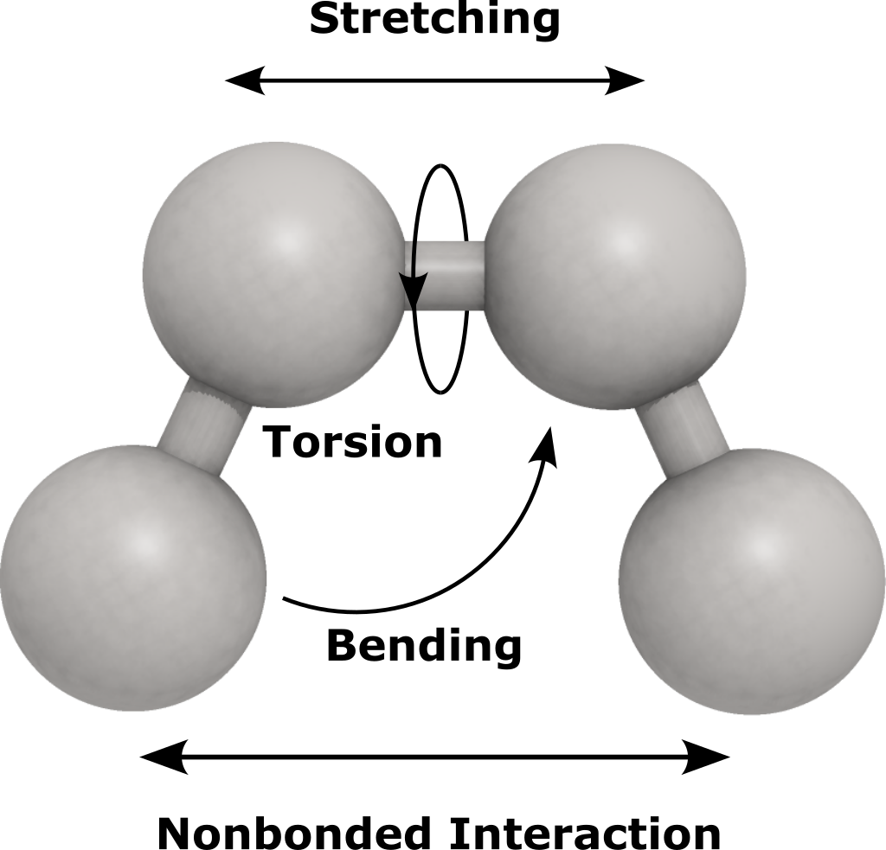

Force Field
A force field is an algorithm that is used to calculate potential energy for the
modeled compounds. In JMolecular Energy the force field is represented with ForceField
abstract class where all the force fields should extend this class. The class offer
methods that is intended to contain certain functionalities.
Assigning Parameters
Empirical force fields most of the time assign parameters to the molecule based on the functional groups and atoms it has. This will facilitate calculating the potential energy for the molecule in the next step. Assigning parameters can be done using this method
mmff.assignParameters(atomContainer);
Energy Component
Each ForceField contains one or more of the EnergyComponent. These components
are intended to address different energy terms such as bond stretching, angle bending
and intermolecular interactions.

Each one contribute to the total potential energy of the system by certain energy.
The class ForceField sums up this energy in the double calculateEnergy(IAtomContainer)
method and return it as a double. You can access the energy components in a certain
force field using the method List<EnergyComponent> getEnergyComponents() which returns
a list of energy component. The ForceField class is flexible and you can add or remove
EnergyComponent using the method addEnergyComponent(EnergyComponent) and
removeEnergyComponent(EnergyComponent). This allows for example to convert a force field
into inter- or intra-molecular interactions only which is very helpful when using
the force field in a docking or 3D QSAR algorithm.
Energy components can be used alone to calculate the potential energy term alone as they
have their double calculateEnergy(IAtomContainer) method. The implementations
also have methods to calculate energy for a certain pair of atoms for example.
Energy Unit
The ForceField use the kcal/mol unit by defualt. In case you want to calculate
the energy in different unit you can use the setEnergyUnit(EnergyUnit) method for changing
the unit. For example:
forcefield.setEnergyUnit(EnergyUnit.KJ_PER_MOL);//for kilojoules/mol
Cutoff Distance
In some force fields it is possible to specify a cutoff distance that defines the distance in angstrom which beyond it any non-bonded interaction will be disregarded. Using this functionality is very helpful in case of large systems where the number of intermolecular interaction is very high. The energy beyond certain distance is very small and have no significant amount and therefore can be disregarded.
forcefield.setCutoffDistance(12);//sets the cutoff distance to 12 Å
Dielectric Constant
Some force fields also has the dielectric constant functionality. This option enable
us to simulate the effect of certain solvents on the degree of intermolecular interaction
without the need the having the solvent molecules being modeled explicitly. The solvent
is represented as a continuous media rather than individual molecules. You can modify the
dielectric constant using setDielectricConstant(double) method.